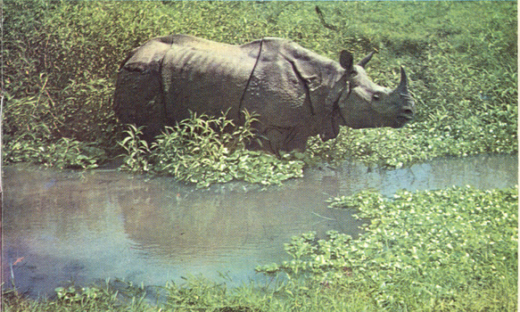
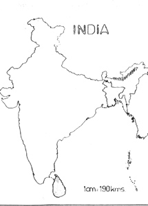

<head>
<meta http-equiv="Content-Type" content="text/html; charset=windows-1252">
<meta name="GENERATOR" content="Microsoft FrontPage 4.0">
<meta name="ProgId" content="FrontPage.Editor.Document">
<title>New Page 1</title>
<meta http-equiv="Content-Type" content="text/html; charset=windows-1252">
<meta name="GENERATOR" content="Microsoft FrontPage 4.0">
<meta name="ProgId" content="FrontPage.Editor.Document">
<title>ECONOMICALLY IMPORTANT PLANTS OF INDIA compiled by K</title>
<meta http-equiv="Content-Type" content="text/html; charset=windows-1252">
<meta name="GENERATOR" content="Microsoft FrontPage 4.0">
<meta name="ProgId" content="FrontPage.Editor.Document">
<title>ECONOMICALLY IMPORTANT PLANTS OF INDIA</title>
<meta http-equiv="Content-Type" content="text/html; charset=windows-1252">
<meta name="GENERATOR" content="Microsoft FrontPage 4.0">
<meta name="ProgId" content="FrontPage.Editor.Document">
<title>New Page 1</title>
<META HTTP-EQUIV="CONTENT-TYPE" CONTENT="text/html; charset=windows-1252">
<TITLE>Aegle marmelos </TITLE>
<META NAME="GENERATOR" CONTENT="Microsoft FrontPage 4.0">
<META NAME="CREATED" CONTENT="20010726;17265013">
<META NAME="CHANGEDBY" CONTENT="L.Sowmya">
<META NAME="CHANGED" CONTENT="20020726;13003551">
<META NAME="DESCRIPTION" CONTENT="Economically Important Plants">
<META NAME="KEYWORDS" CONTENT="Abies pindrow">
<META NAME="ProgId" CONTENT="FrontPage.Editor.Document">
<STYLE>
	<!--
		P { color: #2c9a97 }
	-->
	</STYLE>
<meta name="Microsoft Theme" content="none">
<link>
</head>

<body LANG="en-US" bgcolor="#CCCCCC" text="#009999">
<P><A NAME="begin"></A>
</P>
<table border="1" width="100%">
  <tr>
    <td width="100%" bgcolor="#1658BC">
      <P ALIGN=CENTER><b><font face="Verdana" size="6" color="#FFFFFF">Digitized
      Inventory of Animal Resources: Mammalia&nbsp;</font></b> <font color="#FFFFFF"><br>
      <b>
      Principal Investigator: Dr. R. J. B Alfred, Co-Investigator: Dr. Rama Krishna, Contributed by:
      Dr. M.S.Pradhan</b></font><br>
      </P>
    </td>
  </tr>
</table>
<p ALIGN="CENTER">&nbsp;</p>
<p ALIGN="CENTER"><a href="http://stp.unipune.ernet.in/zsi/photomap.html?code=98"><i style="mso-bidi-font-style:normal"><font color="#808000"><font face="Arial" size="6"><b style="mso-bidi-font-weight: normal; mso-ansi-font-size: 9.0pt; mso-bidi-font-size: 12.0pt; mso-fareast-font-family: Times New Roman; mso-bidi-font-family: Times New Roman; mso-ansi-language: EN-US; mso-fareast-language: EN-US; mso-bidi-language: AR-SA"><span style="mso-ansi-font-size: 9.0pt; mso-bidi-font-size: 12.0pt; mso-fareast-font-family: Times New Roman; mso-bidi-font-family: Times New Roman; mso-ansi-language: EN-US; mso-fareast-language: EN-US; mso-bidi-language: AR-SA; mso-bidi-font-weight: normal">Rhinocerous
unicornis</span></b></font></font></i><font face="Arial" size="6" color="#808000"><b style="mso-bidi-font-weight: normal; mso-ansi-font-size: 9.0pt; mso-bidi-font-size: 12.0pt; mso-fareast-font-family: Times New Roman; mso-bidi-font-family: Times New Roman; mso-ansi-language: EN-US; mso-fareast-language: EN-US; mso-bidi-language: AR-SA"><span style="mso-bidi-font-size: 12.0pt; mso-fareast-font-family: Times New Roman; mso-bidi-font-family: Times New Roman; mso-ansi-language: EN-US; mso-fareast-language: EN-US; mso-bidi-language: AR-SA; mso-ansi-font-size: 9.0pt; mso-bidi-font-weight: normal">,
Linnaeus</span></b></font></a></p>
<P ALIGN=LEFT><font size="6" face="Comic Sans MS" color="#009999"><b>&nbsp;&nbsp;&nbsp;&nbsp;&nbsp;&nbsp;&nbsp;&nbsp;&nbsp;&nbsp;&nbsp;&nbsp;&nbsp;&nbsp;&nbsp;&nbsp;&nbsp;&nbsp;&nbsp;&nbsp;</b></font></P>
<P ALIGN=LEFT><A HREF="#Taxonomic Details"><FONT FACE="Comic Sans MS">Taxonomic 
  Details</FONT> </A><FONT FACE="Comic Sans MS"><BR>
  ----- </FONT><A HREF="#Scientific Name"><FONT FACE="Comic Sans MS">Scientific Name</FONT></A><FONT FACE="Comic Sans MS"><BR>
  ----- </FONT><A HREF="#Classification"><FONT FACE="Comic Sans MS">Classification</FONT></A><FONT FACE="Comic Sans MS"><BR>
  ----- </FONT><A HREF="#Synonyms"><FONT FACE="Comic Sans MS">Synonyms</FONT></A><FONT FACE="Comic Sans MS"><BR>
  ----- </FONT><A HREF="#Common Names"><FONT FACE="Comic Sans MS">Common Names</FONT></A><FONT FACE="Comic Sans MS"><BR>
  </FONT><A HREF="#Other Biological Details"><FONT FACE="Comic Sans MS">Other 
  Biological Details</FONT></A><FONT FACE="Comic Sans MS"><BR>
  ----- </FONT><A HREF="#Habit and Habitat"><FONT FACE="Comic Sans MS">Habit and 
  Habitat</FONT></A><FONT FACE="Comic Sans MS"><BR>
  ----- </FONT><A HREF="#Distribution"><FONT FACE="Comic Sans MS">Distribution</FONT></A><FONT FACE="Comic Sans MS"><BR>
  ---------- </FONT><A HREF="#Extend of Occurance"><FONT FACE="Comic Sans MS">Extend of
Occurrence</FONT></A><FONT FACE="Comic Sans MS"><BR>
  ---------- </FONT><A HREF="#Area of occurance"><FONT FACE="Comic Sans MS">Area of
</FONT></A><A HREF="#Area of occurance"><font face="Comic Sans MS">occurrence</font></A><FONT FACE="Comic Sans MS"><BR>
  ---------- </FONT><A HREF="#Altitude:"><FONT FACE="Comic Sans MS">Altitude</FONT></A><FONT FACE="Comic Sans MS"><BR>
  ---------- </FONT><A HREF="#Population:"><FONT FACE="Comic Sans MS">Population</FONT></A><FONT FACE="Comic Sans MS"><BR>
  ----- </FONT>
  <A HREF="#Conservation Status:"><FONT FACE="Comic Sans MS">Conservation Status</FONT></A><FONT FACE="Comic Sans MS"><BR>
  ----- </FONT>
  <A HREF="#Diagnostic Features"><FONT FACE="Comic Sans MS">Diagnostic 
  Features</FONT></A><FONT FACE="Comic Sans MS"><BR>
  ----- </FONT>
<a HREF="#Breeding system"><FONT FACE="Comic Sans MS">Breeding system</FONT></a><FONT FACE="Comic Sans MS"><BR>
  </FONT><A HREF="#Miscellaneous Information"><FONT FACE="Comic Sans MS">Miscellaneous 
  Information</FONT></A><FONT FACE="Comic Sans MS"><BR>
  </FONT><A HREF="#Literature"><FONT FACE="Comic Sans MS">Literature</FONT></A></P>
<HR SIZE=3 COLOR="#0000ff">
<P><A NAME="Taxonomic Details"></A><FONT SIZE=6><FONT FACE="Monotype Corsiva"><FONT COLOR="#1658bc"><u>Taxonomic 
  Details</u></FONT></FONT></FONT> </P>
<HR SIZE=3 COLOR="#0000ff">
<P><A NAME="Scientific Name"></A><A NAME="Classification"></A><A NAME="Synonyms"></A><A NAME="Common Names"></A> 
  <FONT FACE="Comic Sans MS, sans-serif"><U>Scientific Name</U> :&nbsp;</FONT><font face="Comic Sans MS, sans-serif">&nbsp;</font><a href="http://stp.unipune.ernet.in/zsi/photomap.html?code=98"><i style="mso-bidi-font-style:normal"><font color="#808000"><font face="Arial" size="6"><b style="mso-bidi-font-weight: normal; mso-ansi-font-size: 9.0pt; mso-bidi-font-size: 12.0pt; mso-fareast-font-family: Times New Roman; mso-bidi-font-family: Times New Roman; mso-ansi-language: EN-US; mso-fareast-language: EN-US; mso-bidi-language: AR-SA"><span style="mso-ansi-font-size: 9.0pt; mso-bidi-font-size: 12.0pt; mso-fareast-font-family: Times New Roman; mso-bidi-font-family: Times New Roman; mso-ansi-language: EN-US; mso-fareast-language: EN-US; mso-bidi-language: AR-SA; mso-bidi-font-weight: normal">Rhinocerous
unicornis</span></b></font></font></i><font face="Arial" size="6" color="#808000"><b style="mso-bidi-font-weight: normal; mso-ansi-font-size: 9.0pt; mso-bidi-font-size: 12.0pt; mso-fareast-font-family: Times New Roman; mso-bidi-font-family: Times New Roman; mso-ansi-language: EN-US; mso-fareast-language: EN-US; mso-bidi-language: AR-SA"><span style="mso-bidi-font-size: 12.0pt; mso-fareast-font-family: Times New Roman; mso-bidi-font-family: Times New Roman; mso-ansi-language: EN-US; mso-fareast-language: EN-US; mso-bidi-language: AR-SA; mso-ansi-font-size: 9.0pt; mso-bidi-font-weight: normal">,
Linnaeus</span></b></font></a></P>
<P><font face="Comic Sans MS" size="3"><U>Classification</U><b><U>:</U></b></font></P>
<blockquote>
  <blockquote>
    <blockquote>
      <blockquote>
        <blockquote>
          <blockquote>
            <blockquote>
<P><font size="4" face="Arial"><span style="mso-bidi-font-size: 12.0pt; color: black">Order:<i style="mso-bidi-font-style:normal">Perissodactyla</i><o:p>
</o:p>
</span></font></P>
              <font size="4"><span style="mso-bidi-font-size: 12.0pt; mso-fareast-font-family: Times New Roman; mso-bidi-font-family: Times New Roman; color: black; mso-ansi-language: EN-US; mso-fareast-language: EN-US; mso-bidi-language: AR-SA"><font face="Arial">Family:</font></span></font><i style="mso-bidi-font-style:normal"><span style="mso-bidi-font-size: 12.0pt; mso-fareast-font-family: Times New Roman; mso-bidi-font-family: Times New Roman; color: black; mso-ansi-language: EN-US; mso-fareast-language: EN-US; mso-bidi-language: AR-SA"><font face="Arial" size="4">Rhinocerotidae</font></span></i>
            </blockquote>
          </blockquote>
        </blockquote>
      </blockquote>
    </blockquote>
  </blockquote>
</blockquote>
<P><font face="Comic Sans MS, sans-serif" size="3">
  <U>Synonyms</U>:&nbsp;&nbsp;&nbsp;&nbsp;&nbsp;&nbsp;&nbsp;&nbsp;&nbsp;&nbsp;&nbsp;&nbsp;&nbsp;&nbsp;&nbsp;
<i style="mso-bidi-font-style:normal"><span style="font-size:9.0pt;mso-bidi-font-size:12.0pt;font-family:Verdana;
mso-fareast-font-family:&quot;Times New Roman&quot;;mso-bidi-font-family:&quot;Times New Roman&quot;;
color:black;mso-ansi-language:EN-US;mso-fareast-language:EN-US;mso-bidi-language:
AR-SA">:&nbsp;Rhinocerous indicus, Cuvier, Rhinoceros asiaticus, Blumenbach, and
Rhinocerous jamrachii, Sclater</span></i> </font></P>
<P><font face="Comic Sans MS, sans-serif" size="3"><BR>
  <U>Common Names</U><SPAN STYLE="text-decoration: none">:&nbsp;</SPAN></font><FONT FACE="Comic Sans MS, sans-serif"><SPAN STYLE="text-decoration: none">&nbsp;&nbsp;&nbsp;&nbsp;&nbsp;&nbsp;</SPAN></FONT><span style="font-size:9.0pt;
mso-bidi-font-size:12.0pt;font-family:Verdana;color:black">Great one horned
Rhinoceros, Indian Rhinoceros </span><span style="font-size:10.0pt;mso-bidi-font-size:12.0pt;
color:black"><o:p>
</o:p>
</span>
</P>
<p class="MsoNormal" style="text-align:justify"><span style="font-size:9.0pt;mso-bidi-font-size:12.0pt;font-family:
Verdana;color:black"><i style="mso-bidi-font-style:
normal">&nbsp;&nbsp;&nbsp;</i><i style="mso-bidi-font-style: normal; font-size: 9.0pt; mso-bidi-font-size: 12.0pt; font-family: Verdana; color: black">&nbsp;&nbsp;&nbsp;&nbsp;&nbsp;&nbsp;&nbsp;&nbsp;&nbsp;&nbsp;&nbsp;&nbsp;&nbsp;&nbsp;&nbsp;&nbsp;&nbsp;&nbsp;&nbsp;&nbsp;&nbsp;&nbsp;&nbsp;&nbsp;&nbsp;&nbsp;&nbsp;&nbsp;&nbsp;&nbsp;&nbsp;&nbsp;
</i><i style="mso-bidi-font-style:
normal">Regional Names:</i></span><span style="font-size:9.0pt;
mso-bidi-font-size:12.0pt;font-family:Verdana;color:black">&nbsp;Hindi: Gainda,
Gargadan, Bengali: Gondar, Assamese: Gor, Marathi: Genda</span><span style="font-size:9.0pt;mso-bidi-font-size:12.0pt;font-family:Verdana;
mso-fareast-font-family:&quot;Arial Unicode MS&quot;;color:black"><o:p>
</o:p>
</span></p>
<P><FONT FACE="Comic Sans MS, sans-serif"><SPAN STYLE="text-decoration: none">
<b><font size="4" color="#000000">
  <BR>
</font></b>
  </SPAN></FONT><font face="Comic Sans MS"><BR>
  </font><BR>
</P>
<P ALIGN=RIGHT><A HREF="#begin"><U><FONT FACE="Comic Sans MS">Back to
Top</FONT></U></A></P>
<HR SIZE=3 COLOR="#0000ff">
<P><A NAME="Other Biological Details"></A><FONT SIZE=3><FONT SIZE=6><FONT FACE="Monotype Corsiva"><FONT COLOR="#1658bc"><u>Other 
  Biological Details</u></FONT></FONT></FONT></FONT> 
</P>
<p class="MsoNormal" style="text-align:justify"><i style="mso-bidi-font-style:
normal"><span style="font-size:9.0pt;mso-bidi-font-size:12.0pt;font-family:
Verdana;color:black">Threats:&nbsp;</span></i><span style="font-size:9.0pt;
mso-bidi-font-size:12.0pt;font-family:Verdana;color:black"> Floods, Habitat
loss, Habitat Fragmentation, Human Interference, Grazing, Hunting, Trade,
Insurgency/Terrorism/War, Corridor loss, Low breeding rate, Poisoning,
Electrocution, Transmission of foot and mouth disease from domestic cattle.;&nbsp;<i style="mso-bidi-font-style:normal">Effect
of threats on population (Perceived or inferred)</i>:&nbsp;Declining</span><span style="font-size:10.0pt;mso-bidi-font-size:12.0pt;
color:black">&nbsp;<o:p>
</o:p>
</span></p>
<p class="MsoNormal" style="text-align:justify"><i style="mso-bidi-font-style:
normal"><span style="font-size:9.0pt;mso-bidi-font-size:12.0pt;font-family:
Verdana;color:black">Trade:&nbsp;</span></i><span style="font-size:9.0pt;
mso-bidi-font-size:12.0pt;font-family:Verdana;color:black"> Local, Domestic,
Commercial and International.;&nbsp;<i style="mso-bidi-font-style:normal">Parts
in trade</i>:&nbsp;Live animals, hair, horn, tail, meat insurg., body parts,
hooves, urine and blood.;&nbsp;<i style="mso-bidi-font-style:normal">Effect of
trade on population (Perceived or inferred)</i>:&nbsp;Declining</span><span style="font-size:9.0pt;mso-bidi-font-size:12.0pt;font-family:Verdana;
mso-fareast-font-family:&quot;Arial Unicode MS&quot;;color:black"><o:p>
</o:p>
</span></p>
<p class="MsoNormal"><span style="font-size:10.0pt;mso-bidi-font-size:12.0pt;
color:black">&nbsp;<o:p>
</o:p>
</span></p>
<P>&nbsp; 
</P>
<HR SIZE=3 COLOR="#0000ff">
<P STYLE="margin-bottom: 0cm"><A NAME="Habit and Habitat"></A><U><FONT FACE="Comic Sans MS">HABIT 
  &amp; HABITAT</FONT></U></P>
<p class="MsoNormal" style="text-align:justify"><span style="font-size:9.0pt;
mso-bidi-font-size:12.0pt;font-family:Verdana;color:black">Indian One Horned
rhino prefers swamps, grassland, savannahs to live. It is also found in wooded
jungles up ravines and low hills . As a rule the animal leads a solitary life,
but several individuals may occupy the same area. The density of rhino was
reported to be 2.78 - 3.13 per sq. km. in Kaziranga, Assam (Choudhury, 1985).
Some scattered parties may be seen grazing in close proximity. The calf keeps
close to the cow while grazing or fleeing. Wallowing in the marshy mud-hole is a
must everyday. It is a good swimmer also. It prefers to move through tall
elephant grass and feeds on them. Grazing starts during the late part of the day
and is continued throughout the night. Its vision is poor and is a slow breeder.
It gives birth to one calf at a time in around October. In spite of its heavy appearance
it is quite agile and can run fast for a short distance. All rhinos of a particular
area defecate at a fixed place, as a result the dung heap goes on enlarging in a
circle.</span><span style="font-size:10.0pt;mso-bidi-font-size:12.0pt;
color:black">&nbsp;<o:p>
</o:p>
</span></p>
<p class="MsoNormal" style="text-align:justify"><i style="mso-bidi-font-style:
normal"><span style="font-size:9.0pt;mso-bidi-font-size:12.0pt;font-family:
Verdana;color:black">Habitat Structure:</span></i><span style="font-size:9.0pt;
mso-bidi-font-size:12.0pt;font-family:Verdana;color:black">&nbsp;One Horned
rhino prefers swampy areas with tall elephant grasses to live in. Habitat structure
has decreased @ of &gt;20 % in last 50 years. Its area of range of distribution
is decreasing at a faster rate.</span><span style="font-size:9.0pt;
mso-bidi-font-size:12.0pt;font-family:Verdana;mso-fareast-font-family:&quot;Arial Unicode MS&quot;;
color:black"><o:p>
</o:p>
</span></p>
<font face="Comic Sans MS" size="3">
<p class="MsoNormal" style="margin-left:1.0in;text-align:justify;text-indent:
-1.0in">&nbsp;&nbsp;&nbsp;<b>&nbsp;&nbsp;&nbsp;&nbsp;&nbsp;&nbsp;&nbsp;&nbsp;&nbsp;&nbsp;&nbsp;&nbsp;&nbsp;</b></p>
</font>
<p>&nbsp;</p>
<p align=RIGHT style="margin-bottom: 0cm"><font face="Comic Sans MS" size="3"><a href="#begin">Back 
  to Top</a></font></p>
<P STYLE="margin-bottom: 0cm">&nbsp;</P>
<P><font size="3"><A NAME="Distribution"></A><A NAME="Extend of Occurance"></A><A NAME="Area of occurance:"></A><A NAME="Altitude:"></A><A NAME="Population:"></a><A NAME="Conservation status:"></A> 
  <FONT FACE="Comic Sans MS"><U>Distribution</U>:</FONT></font></P>
<P> 
  <FONT FACE="Comic Sans MS"><span style="font-size:9.0pt;
mso-bidi-font-size:12.0pt;font-family:Verdana;color:black">One Horned Rhinoceros
  has been once known to be common and wide spread in occurrence throughout
  Indo-Gangetic plains along the base of Himalayan ranges and its neighbouring
  countries but by the end of 17th century it had completely disappeared from
  much its range except in the northern parts of West Bengal and Assam in India.
  Sometimes it sporadically wanders in the part of Arunachal Pradesh bordering
  Assam state.</span></FONT></P>
<P><i style="mso-bidi-font-style:normal"><span style="font-size:9.0pt;mso-bidi-font-size:12.0pt;font-family:Verdana;
mso-fareast-font-family:&quot;Times New Roman&quot;;mso-bidi-font-family:&quot;Times New Roman&quot;;
color:black;mso-ansi-language:EN-US;mso-fareast-language:EN-US;mso-bidi-language:
AR-SA">:</span></i><span style="font-size:9.0pt;mso-bidi-font-size:12.0pt;
font-family:Verdana;mso-fareast-font-family:&quot;Times New Roman&quot;;mso-bidi-font-family:
&quot;Times New Roman&quot;;color:black;mso-ansi-language:EN-US;mso-fareast-language:
EN-US;mso-bidi-language:AR-SA"> &nbsp;<i style="mso-bidi-font-style:normal">No.of
Locations:&nbsp;</i>10;&nbsp;<i style="mso-bidi-font-style:normal">Type:&nbsp;</i>Fragmented</span></P>
<P><font face="Comic Sans MS" size="3"><U>Extent of </U><u>Occurrence&nbsp;&nbsp;&nbsp;</u>&nbsp;&nbsp;&nbsp;&nbsp;
<span style="font-size:9.0pt;
mso-bidi-font-size:12.0pt;font-family:Verdana;color:black">2001-5000 sq.kms.</span><span style="font-size:9.0pt;mso-bidi-font-size:12.0pt;font-family:Verdana;
mso-fareast-font-family:&quot;Arial Unicode MS&quot;;color:black"><o:p>
</o:p>
</span><BR>
  </font><font size="3"><BR>
  </font></P>
<P STYLE="margin-bottom: 0cm"><font face="Comic Sans MS" size="3"><U>Area of occurrence:&nbsp;&nbsp;&nbsp;&nbsp;&nbsp;&nbsp;&nbsp;
<span style="font-size:9.0pt;
mso-bidi-font-size:12.0pt;font-family:Verdana;color:black">501-2000 sq.kms.</span><span style="font-size:9.0pt;mso-bidi-font-size:12.0pt;font-family:Verdana;
mso-fareast-font-family:&quot;Arial Unicode MS&quot;;color:black"><o:p>
</o:p>
</span></U> 
  </font></P>
<P STYLE="margin-bottom: 0cm"><font face="Comic Sans MS" size="3"><U>Altitude:</U></font><font color="#000000" face="Comic Sans MS" size="4">&nbsp;&nbsp;&nbsp;&nbsp;&nbsp;&nbsp;&nbsp;&nbsp;&nbsp;&nbsp;&nbsp;&nbsp;&nbsp;&nbsp;&nbsp;&nbsp;&nbsp;
<span style="font-size:9.0pt;
mso-bidi-font-size:12.0pt;font-family:Verdana;color:black">up to 200m</span><span style="font-size:9.0pt;mso-bidi-font-size:12.0pt;font-family:Verdana;
mso-fareast-font-family:&quot;Arial Unicode MS&quot;;color:black"><o:p>
</o:p>
</span></font><font face="Comic Sans MS" size="3"><BR>
  <BR>
  <U>Population:</U>&nbsp; </font></P>
<p class="MsoNormal" style="text-align:justify"><i style="mso-bidi-font-style:
normal"><span style="font-size:9.0pt;mso-bidi-font-size:12.0pt;font-family:
Verdana;color:black">Population:&nbsp;</span></i><span style="font-size:9.0pt;
mso-bidi-font-size:12.0pt;font-family:Verdana;color:black"> <i style="mso-bidi-font-style:normal">Global
Population:&nbsp;</i>1250 in India (CAMP, 1998);&nbsp;<i style="mso-bidi-font-style:normal">No.of
mature individuals in all the populations:&nbsp;</i>less than 2500</span><span style="font-size:10.0pt;mso-bidi-font-size:12.0pt;
color:black">&nbsp;<o:p>
</o:p>
</span></p>
<p class="MsoNormal" style="text-align:justify"><i style="mso-bidi-font-style:
normal"><span style="font-size:9.0pt;mso-bidi-font-size:12.0pt;font-family:
Verdana;color:black">Captive Population:&nbsp;</span></i><span style="font-size:9.0pt;mso-bidi-font-size:12.0pt;font-family:Verdana;
color:black">35 in 12 Indian zoos and 66 in 27 zoos abroad (CAMP, Report, 1998).
Rhino can bred in captivity.</span><span style="font-size:10.0pt;mso-bidi-font-size:12.0pt;
color:black">&nbsp;<o:p>
</o:p>
</span></p>
<p class="MsoNormal" style="text-align:justify"><i style="mso-bidi-font-style:
normal"><span style="font-size:9.0pt;mso-bidi-font-size:12.0pt;font-family:
Verdana;color:black">Life span:&nbsp;</span></i><span style="font-size:9.0pt;
mso-bidi-font-size:12.0pt;font-family:Verdana;color:black"> (Wild):&nbsp;70 yrs;&nbsp;(Captivity):&nbsp;Not
Known</span><span style="font-size:10.0pt;mso-bidi-font-size:12.0pt;
color:black">&nbsp;<o:p>
</o:p>
</span></p>
<p class="MsoNormal" style="text-align:justify"><i style="mso-bidi-font-style:
normal"><span style="font-size:9.0pt;mso-bidi-font-size:12.0pt;font-family:
Verdana;color:black">Population Trend:&nbsp;</span></i><span style="font-size:
9.0pt;mso-bidi-font-size:12.0pt;font-family:Verdana;color:black">Declining.</span><span style="font-size:9.0pt;mso-bidi-font-size:12.0pt;font-family:Verdana;
mso-fareast-font-family:&quot;Arial Unicode MS&quot;;color:black"><o:p>
</o:p>
</span></p>
<P STYLE="margin-bottom: 0cm"><font face="Comic Sans MS" size="3"><U>Conservation status:</U><span style="mso-tab-count:1">&nbsp;&nbsp;&nbsp;&nbsp;&nbsp;&nbsp;&nbsp;&nbsp;&nbsp;<span style="font-size:9.0pt;mso-bidi-font-size:12.0pt;
font-family:Verdana;mso-fareast-font-family:&quot;Times New Roman&quot;;mso-bidi-font-family:
&quot;Times New Roman&quot;;color:black;mso-ansi-language:EN-US;mso-fareast-language:
EN-US;mso-bidi-language:AR-SA">Non-Endemic species&nbsp;&nbsp;&nbsp; <b style="mso-bidi-font-weight:normal"><span style="font-size:9.0pt;mso-bidi-font-size:12.0pt;font-family:Verdana;
color:black">Endangered</span></b><span style="color:black"><o:p>
</o:p>
</span></span> </span>

</font>
<P STYLE="margin-bottom: 0cm"><font face="Comic Sans MS" size="3"><span style="mso-tab-count:1"><i style="mso-bidi-font-style:
normal"><span style="font-size:9.0pt;mso-bidi-font-size:12.0pt;font-family:
Verdana;color:black">CITES APPENDIX:</span></i><span style="font-size:9.0pt;
mso-bidi-font-size:12.0pt;font-family:Verdana;color:black">&nbsp;I;&nbsp;<i style="mso-bidi-font-style:normal">Indian
Wildlife (Protection) Act (1972) (As ammended upto 2002):</i>&nbsp;Schedule I;&nbsp;Part
I;&nbsp;<i style="mso-bidi-font-style:normal">Indian Red Data Book (IUCN, 1994):</i>&nbsp;Endangered;&nbsp;<i style="mso-bidi-font-style:normal">IUCN
(1998)</i> (Proposed):&nbsp;Endangered (National) and Data Deficient (Global);&nbsp;<i style="mso-bidi-font-style:
normal">IUCN (2002)</i> (Proposed):&nbsp;Endangered (Global) based on Version
2.3 1994 (IUCN, 2003).;&nbsp;</span> </span>

</font>
<P STYLE="margin-bottom: 0cm"><font size="4"><u>Diagnostic features : </u></font><font face="Comic Sans MS" size="3"><span style="font-size: 9.0pt; mso-bidi-font-size: 12.0pt; font-family: Verdana; mso-fareast-font-family: Arial Unicode MS; color: black; mso-tab-count: 1"><o:p>
</o:p>
</span>
<p class="MsoNormal" style="text-align:justify"><i style="mso-bidi-font-style:
normal"><span style="font-size:9.0pt;mso-bidi-font-size:12.0pt;font-family:
Verdana;color:black">:</span></i><span style="font-size:9.0pt;mso-bidi-font-size:
12.0pt;font-family:Verdana;color:black">&nbsp;All rhino species belong to the
mammalian order of odd toed ungulates, Perissodactyla. As name suggests Indian
rhino possesses only one dermal horn on its snout. Further it also possesses
short and strong limbs. Indian species is largest in size among the asiatic
species. The Indian rhino is a huge, hoofed creature with a fairly long and
stout horn. The snout and skin folded into very prominent shields and studded
with wart like tubercles. The folds are present before and after shoulders and
in front of thigh. It has hairs only on tail and ears. Its horn is a mass of
agglutinated or compressed hair made of keratin fibers forming a hard cemented
mass. It is not at all connected with the skeleton. Even if the horn is knocked
off accidentally a new horn grows in its place. Horns are present in both the
sexes. Each foot has a distinct hoof and three digits. The unusual physical
appearance of the animal looks like a monster of some bygone age. The colour of
the body is blackish gray.</span><span style="font-size:10.0pt;mso-bidi-font-size:12.0pt;
color:black"><o:p>
</o:p>
</span></p>
<p class="MsoNormal" style="text-align:justify"><i style="mso-bidi-font-style:
normal"><span style="font-size:9.0pt;mso-bidi-font-size:12.0pt;font-family:
Verdana;color:black">Measurements:</span></i><span style="font-size:9.0pt;
mso-bidi-font-size:12.0pt;font-family:Verdana;color:black">&nbsp;(In meter/cm):
From snout to tip of the tail: 3.9m; Height at shoulder: 1.8m; Length of horn:
30-60cm.</span><span style="font-size:10.0pt;mso-bidi-font-size:12.0pt;
color:black">&nbsp;<o:p>
</o:p>
</span></p>
<p class="MsoNormal" style="text-align:justify"><i style="mso-bidi-font-style:
normal"><span style="font-size:9.0pt;mso-bidi-font-size:12.0pt;font-family:
Verdana;color:black">Weight:</span></i><span style="font-size:9.0pt;mso-bidi-font-size:
12.0pt;font-family:Verdana;color:black">&nbsp;(In Kg): Mature male: 1650; weight
of horn: 2-2.5.</span><span style="font-size:9.0pt;mso-bidi-font-size:
12.0pt;font-family:Verdana;mso-fareast-font-family:&quot;Arial Unicode MS&quot;;
color:black"><o:p>
</o:p>
</span></p>

</font>
<p class="MsoNormal" style="text-align:justify"><font face="Comic Sans MS" size="4" color="#000000">&nbsp;</font></p>
<font face="Comic Sans MS" size="3">

  <U>Breeding system:</U></font>
<p>&nbsp;</p>
<P ALIGN=RIGHT><A HREF="#begin"><FONT FACE="Comic Sans MS">Back to
Top</FONT></A><FONT FACE="Comic Sans MS"> </FONT>
</P>
<HR SIZE=3 COLOR="#0000ff">
<P><A NAME="Miscellaneous Information2"></A><A NAME="Miscellaneous Information1"></A>
 <FONT SIZE=6><FONT FACE="Monotype Corsiva"><FONT COLOR="#1658bc">
<U>Miscellaneous
Information</U>&nbsp;&nbsp;</FONT></FONT></FONT>
</P>
<P><i style="mso-bidi-font-style:normal"><span style="font-size:9.0pt;mso-bidi-font-size:12.0pt;font-family:Verdana;
mso-fareast-font-family:&quot;Times New Roman&quot;;mso-bidi-font-family:&quot;Times New Roman&quot;;
color:black;mso-ansi-language:EN-US;mso-fareast-language:EN-US;mso-bidi-language:
AR-SA">Intraspecific variations:</span></i><span style="font-size:9.0pt;
mso-bidi-font-size:12.0pt;font-family:Verdana;mso-fareast-font-family:&quot;Times New Roman&quot;;
mso-bidi-font-family:&quot;Times New Roman&quot;;color:black;mso-ansi-language:EN-US;
mso-fareast-language:EN-US;mso-bidi-language:AR-SA">&nbsp;No Subspecies</span>
</P>
<P><i style="mso-bidi-font-style:
normal"><span style="font-size:9.0pt;mso-bidi-font-size:12.0pt;font-family:
Verdana;color:black">Sighting Records:&nbsp;</span></i><span style="font-size:
9.0pt;mso-bidi-font-size:12.0pt;font-family:Verdana;color:black"> <i style="mso-bidi-font-style:normal">Type
of Sighting:</i>&nbsp;Direct and Indirect;&nbsp;<i style="mso-bidi-font-style:normal">Field
Notes:</i>&nbsp;Sighting records reported based on recent field studies by
Mukharjee, 1982, Choudhary in Assam (1984-97) and West Bengal (1995-96).&nbsp;</span>
</P>
<p class="MsoNormal" style="text-align:justify"><i style="mso-bidi-font-style:
normal"><span style="font-size:9.0pt;mso-bidi-font-size:12.0pt;font-family:
Verdana;color:black">Taxon related studies recommended:&nbsp;</span></i><span style="font-size:9.0pt;mso-bidi-font-size:12.0pt;font-family:Verdana;
color:black">Survey and Monitoring, Limiting Factor research and Habitat
management</span><span style="font-size:9.0pt;mso-bidi-font-size:12.0pt;
font-family:Verdana;mso-fareast-font-family:&quot;Arial Unicode MS&quot;;color:black"><o:p>
</o:p>
</span></p>
<p class="MsoNormal"><span style="font-size:10.0pt;mso-bidi-font-size:12.0pt;
color:black">&nbsp;<o:p>
</o:p>
</span></p>
<P><span style="font-size:
9.0pt;mso-bidi-font-size:12.0pt;font-family:Verdana;mso-fareast-font-family:
&quot;Arial Unicode MS&quot;;color:black"><o:p>
</o:p>
</span><span style="font-size:9.0pt;mso-bidi-font-size:12.0pt;font-family:Verdana;
mso-fareast-font-family:&quot;Arial Unicode MS&quot;;color:black"><o:p>
</o:p>
</span>
</P>
<font face="Comic Sans MS" size="3">
<p class="MsoNormal" style="margin-left:1.0in;text-align:justify;text-indent:
-1.0in"><span style="mso-spacerun: yes">&nbsp;&nbsp;</span><span style="mso-tab-count:1">&nbsp;&nbsp;&nbsp;&nbsp;&nbsp;&nbsp;&nbsp;</span>&nbsp;&nbsp;&nbsp;<span style="mso-tab-count: 1">&nbsp;
</span></p>
</font>
<HR SIZE=3 COLOR="#0000ff">
<P><font face="Comic Sans MS">&nbsp;<br>
&nbsp;&nbsp;&nbsp;&nbsp;&nbsp;&nbsp;&nbsp;&nbsp;&nbsp;&nbsp;&nbsp;&nbsp;&nbsp;&nbsp;&nbsp;&nbsp;&nbsp;&nbsp;&nbsp;&nbsp;&nbsp;&nbsp;&nbsp;&nbsp;&nbsp;&nbsp;&nbsp;&nbsp;&nbsp;&nbsp;&nbsp;&nbsp;&nbsp;&nbsp;&nbsp;
<span style="font-size:9.0pt;mso-bidi-font-size:12.0pt;
font-family:Verdana;mso-fareast-font-family:&quot;Times New Roman&quot;;mso-bidi-font-family:
&quot;Times New Roman&quot;;color:black;mso-ansi-language:EN-US;mso-fareast-language:
EN-US;mso-bidi-language:AR-SA"><!--[if gte vml 1]><v:shapetype id="_x0000_t75"
 coordsize="21600,21600" o:spt="75" o:preferrelative="t" path="m@4@5l@4@11@9@11@9@5xe"
 filled="f" stroked="f">
 <v:stroke joinstyle="miter"/>
 <v:formulas>
  <v:f eqn="if lineDrawn pixelLineWidth 0"/>
  <v:f eqn="sum @0 1 0"/>
  <v:f eqn="sum 0 0 @1"/>
  <v:f eqn="prod @2 1 2"/>
  <v:f eqn="prod @3 21600 pixelWidth"/>
  <v:f eqn="prod @3 21600 pixelHeight"/>
  <v:f eqn="sum @0 0 1"/>
  <v:f eqn="prod @6 1 2"/>
  <v:f eqn="prod @7 21600 pixelWidth"/>
  <v:f eqn="sum @8 21600 0"/>
  <v:f eqn="prod @7 21600 pixelHeight"/>
  <v:f eqn="sum @10 21600 0"/>
 </v:formulas>
 <v:path o:extrusionok="f" gradientshapeok="t" o:connecttype="rect"/>
 <o:lock v:ext="edit" aspectratio="t"/>
</v:shapetype><v:shape id="_x0000_i1025" type="#_x0000_t75" alt="" style='width:437.25pt;
 height:262.5pt' fillcolor="window">
 <v:imagedata src="Mammal26.jpg"
  o:href="http://stp.unipune.ernet.in/zsi/images/photos/img98.jpg"/>
</v:shape><![endif]-->
</span>
  </font></P>
<P>&nbsp;&nbsp;&nbsp;<font face="Comic Sans MS"><span style="font-size: 9.0pt; mso-bidi-font-size: 12.0pt; font-family: Verdana; mso-fareast-font-family: Times New Roman; mso-bidi-font-family: Times New Roman; color: black; mso-ansi-language: EN-US; mso-fareast-language: EN-US; mso-bidi-language: AR-SA">&nbsp;&nbsp;&nbsp;&nbsp;&nbsp;&nbsp;&nbsp;&nbsp;&nbsp;&nbsp;&nbsp;&nbsp;&nbsp;&nbsp;&nbsp;&nbsp;&nbsp;&nbsp;&nbsp;&nbsp;&nbsp;&nbsp;&nbsp;&nbsp;&nbsp;&nbsp;&nbsp;&nbsp;&nbsp;&nbsp;&nbsp;&nbsp;&nbsp;&nbsp;&nbsp;&nbsp;&nbsp;&nbsp;&nbsp;&nbsp;&nbsp;&nbsp;&nbsp;&nbsp;&nbsp;&nbsp;&nbsp;&nbsp;&nbsp;&nbsp;&nbsp;&nbsp;&nbsp;&nbsp;&nbsp;&nbsp;&nbsp;&nbsp;&nbsp;&nbsp;&nbsp;&nbsp;&nbsp;&nbsp;&nbsp;&nbsp;&nbsp;&nbsp;&nbsp;&nbsp;&nbsp;&nbsp;&nbsp;&nbsp;&nbsp;&nbsp;
<span style="font-size:9.0pt;mso-bidi-font-size:12.0pt;
font-family:Verdana;mso-fareast-font-family:&quot;Times New Roman&quot;;mso-bidi-font-family:
&quot;Times New Roman&quot;;color:black;mso-ansi-language:EN-US;mso-fareast-language:
EN-US;mso-bidi-language:AR-SA"><!--[if gte vml 1]><v:shapetype id="_x0000_t75"
 coordsize="21600,21600" o:spt="75" o:preferrelative="t" path="m@4@5l@4@11@9@11@9@5xe"
 filled="f" stroked="f">
 <v:stroke joinstyle="miter"/>
 <v:formulas>
  <v:f eqn="if lineDrawn pixelLineWidth 0"/>
  <v:f eqn="sum @0 1 0"/>
  <v:f eqn="sum 0 0 @1"/>
  <v:f eqn="prod @2 1 2"/>
  <v:f eqn="prod @3 21600 pixelWidth"/>
  <v:f eqn="prod @3 21600 pixelHeight"/>
  <v:f eqn="sum @0 0 1"/>
  <v:f eqn="prod @6 1 2"/>
  <v:f eqn="prod @7 21600 pixelWidth"/>
  <v:f eqn="sum @8 21600 0"/>
  <v:f eqn="prod @7 21600 pixelHeight"/>
  <v:f eqn="sum @10 21600 0"/>
 </v:formulas>
 <v:path o:extrusionok="f" gradientshapeok="t" o:connecttype="rect"/>
 <o:lock v:ext="edit" aspectratio="t"/>
</v:shapetype><v:shape id="_x0000_i1025" type="#_x0000_t75" alt="Map" style='width:161.25pt;
 height:225pt' fillcolor="window">
 <v:imagedata src="Mammal27.jpg"
  o:href="http://stp.unipune.ernet.in/zsi/images/maps/map98.jpg"/>
</v:shape><![endif]-->
</span></span></font></P>
<P><span style="font-size:9.0pt;mso-bidi-font-size:12.0pt;font-family:
Verdana;color:black"><i style="mso-bidi-font-style:
normal">&nbsp;&nbsp;&nbsp;</i><i style="mso-bidi-font-style: normal; font-size: 9.0pt; mso-bidi-font-size: 12.0pt; font-family: Verdana; color: black">&nbsp;&nbsp;&nbsp;&nbsp;&nbsp;&nbsp;&nbsp;&nbsp;&nbsp;&nbsp;&nbsp;&nbsp;&nbsp;&nbsp;&nbsp;&nbsp;&nbsp;&nbsp;&nbsp;&nbsp;&nbsp;&nbsp;&nbsp;&nbsp;&nbsp;&nbsp;&nbsp;&nbsp;&nbsp;&nbsp;&nbsp;&nbsp;&nbsp;&nbsp;&nbsp;&nbsp;&nbsp;&nbsp;&nbsp;&nbsp;&nbsp;&nbsp;&nbsp;&nbsp;
</i><i style="mso-bidi-font-style:
normal">Map Source</i></span><span style="font-size:9.0pt;
mso-bidi-font-size:12.0pt;font-family:Verdana;color:black">: Mukherjee (1982),
Corbet &amp; Hill (1992) and Choudhury (1997)</span><span style="font-size:
9.0pt;mso-bidi-font-size:12.0pt;font-family:Verdana;mso-fareast-font-family:
&quot;Arial Unicode MS&quot;;color:black"><o:p>
</o:p>
</span></P>
<P><font size="3"><BR>
  </font><BR>
</P>
<P ALIGN=RIGHT><A HREF="#begin"><U><FONT FACE="Comic Sans MS">Back to
Top</FONT></U></A></P>
<HR SIZE=3 COLOR="#0000ff">
<P><A NAME="Literature"></A><U><FONT SIZE=6><FONT FACE="Monotype Corsiva"><FONT COLOR="#1658bc">Literature</FONT></FONT></FONT></U>
</P>
<p><span style="font-size:9.0pt;mso-bidi-font-size:12.0pt;font-family:Verdana">Agrawal,
V. C.; Das, P. K.; Chakarborty, S.; Ghose, R.K.; Mandal, A. K.; Chakraborty, T.
K.; Poddar, A. K.; Lal, J. P.; Bhattacharyya, T. P. and Ghosh, M. K. &nbsp;1992&nbsp;Mammalia&nbsp;<b style="mso-bidi-font-weight:normal">IN</b>&nbsp;<i style="mso-bidi-font-style:normal">Fauna
of West Bengal, Part-I State Fauna Series: 3 </i>&nbsp;27-170&nbsp;Publisher:&nbsp;Zoological
survey of India, Kolkata, &nbsp;<br>
Anonymous.&nbsp;1994&nbsp;<i style="mso-bidi-font-style:normal">The Red Data
Book on Indian Animals: Part–I Vertebrata</i>&nbsp;534&nbsp;Publisher:&nbsp;Zoological
Survey of India, Kolkata.&nbsp;<br>
Choudhury, Anwaruddin.&nbsp;1985&nbsp;Distribution of Indian One-Horned
rhinoceros&nbsp;<i style="mso-bidi-font-style:normal">Tigerpaper</i>&nbsp;<b style="mso-bidi-font-weight:normal">XII</b>:&nbsp;(2):&nbsp;25-30&nbsp;<br>
Choudhury, Anwaruddin.&nbsp;1989&nbsp;Pabitora. Assam's rhino Reserve&nbsp;<i style="mso-bidi-font-style:normal">The
Indian Magazine</i>&nbsp;<b style="mso-bidi-font-weight:normal">9</b>:&nbsp;46-54&nbsp;<br>
Choudhury, Anwaruddin.&nbsp;1996&nbsp;The greater One-Horned rhino outside
Protected Areas in Assam, India&nbsp;<i style="mso-bidi-font-style:normal">Pachyderm</i>&nbsp;<b style="mso-bidi-font-weight:normal">22</b>:&nbsp;7-9&nbsp;<br>
Choudhury, Anwaruddin.&nbsp;1997&nbsp;Indian One-Horned Rhinoceros, Rhinoceros
unicornis Linnaeus 1758, in Arunchal Pradesh&nbsp;<i style="mso-bidi-font-style:
normal">Jour. Bombay nat. Hist. Soc.</i>&nbsp;<b style="mso-bidi-font-weight:
normal">94</b>:&nbsp;(1):&nbsp;152-153.</span></p>
<p><span style="font-size:9.0pt;mso-bidi-font-size:12.0pt;font-family:Verdana">Molur,
S.; Nameer, P. O. and Walker, S.&nbsp;1998&nbsp;<i style="mso-bidi-font-style:
normal">Report of the workshop” Conservation Assessment and Management Plan
for Mammals of India.” (BCPP- Endangered Species Project) </i>&nbsp;176pp.&nbsp;Publisher:&nbsp;ZooOutrach
Organization, Conservation Breeding Specialist Group, Coimbatore, India. &nbsp;<br>
Mukherjee, A. K. &nbsp;1982&nbsp;<i style="mso-bidi-font-style:normal">Endangered
Animals of India </i>&nbsp;122pp.&nbsp;Publisher:&nbsp;Director, Zoological
Survey ofIndia,Kolkata.&nbsp;<br>
Prater, S. H. &nbsp;1980&nbsp;<i style="mso-bidi-font-style:normal">The Book of
Indian Animals</i>&nbsp;324pp.&nbsp;Publisher:&nbsp;Bombay Naturla History
Society, Mumbai.&nbsp;<br>
Tikader, B. K. &nbsp;1983&nbsp;<i style="mso-bidi-font-style:normal">Threatened
Animals of India </i>&nbsp;307pp.&nbsp;Publisher:&nbsp;Director, Zoological
Survey of India,Kolkata.&nbsp;<br>
Vigne, Lucy and Martin, Esmond Bradley&nbsp;1991&nbsp;Assam's rhinos face new
poaching threats.&nbsp;<i style="mso-bidi-font-style:normal">Oryx</i>&nbsp;<b style="mso-bidi-font-weight:normal">25</b>:&nbsp;(4):&nbsp;215-221.<o:p>
</o:p>
</span></p>
<P>&nbsp;
</P>
<HR SIZE=3 COLOR="#0000ff">
<P><font face="Comic Sans MS"><br>
  </font><font size="2" color="#009999"><b><font face="Comic Sans MS"></font></b></font></P>
<p align="right"><font size="3" color="#009999"><b><font face="Comic Sans MS"></font></b></font></p>
<div align="right"><font color="#009999"><b><font face="Comic Sans MS" size="2"></font></b></font></div>
<P><BR>
  <BR>
</P>
<P ALIGN=RIGHT><A HREF="#begin"><U><font face="Comic Sans MS">Back to Top</font></U></A></P>

</body>

<!DOCTYPE HTML PUBLIC "-//W3C//DTD HTML 3.2//EN">
